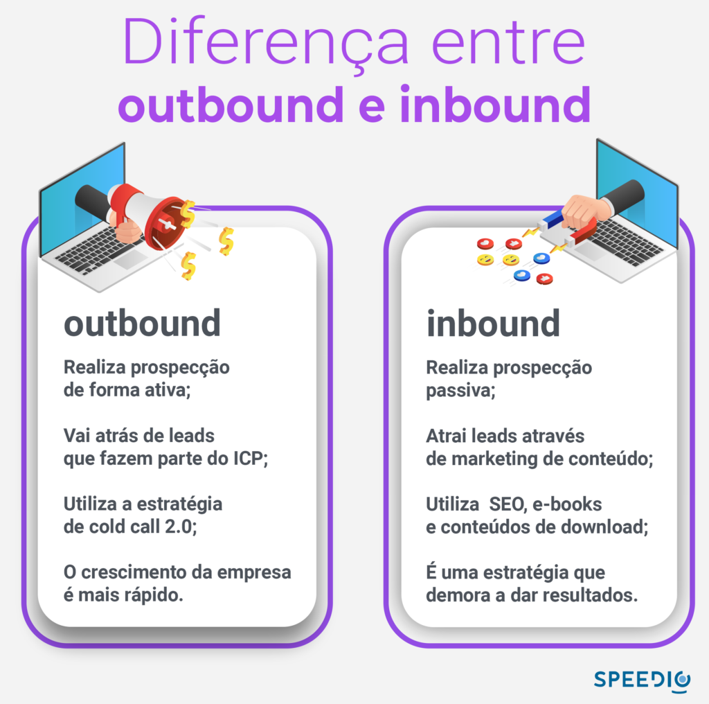
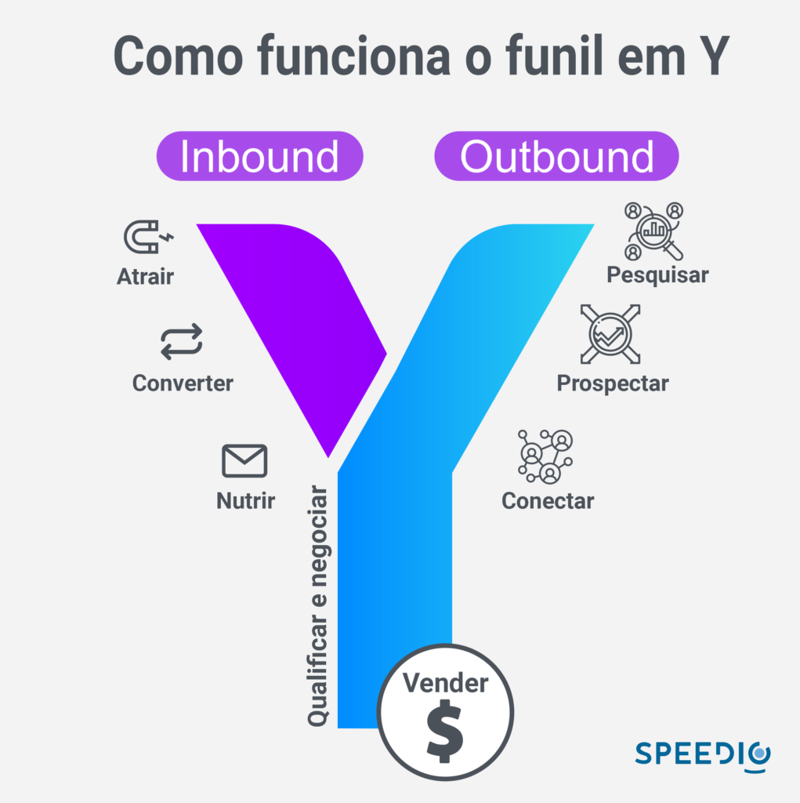

Artigos da Categoria
Inbound e outbound, qual a diferença?
Para saber qual é a melhor estratégia e quais as ferramentas de prospecção utilizar na sua empresa, é fundamental conhecer as duas, entender suas diferenças e pontos fortes para que você torne o seu setor comercial em uma verdadeira máquina de vendas.
Neste artigo, vamos explorar as diferenças entre inbound e outbound e quais são suas principais características.
Neste post você verá
O que é outbound marketing?
Outbound marketing é uma estratégia que se concentra em conseguir clientes por meio da prospecção ativa. Isso é, você vai atrás de potenciais clientes que fazem parte do seu ICP e os aborda por diversos meios de comunicação, como redes sociais, e-mails e telefones.
Esse método de prospecção gera resultados mais rápidos, pois você estará falando apenas com pessoas que correspondem ao perfil da empresa, o que gera mais oportunidades de vendas.
O que é inbound marketing?
Inbound marketing é uma estratégia que atrai o público por meio de marketing digital, com produção de conteúdo nos canais como landing pages para gerar interesse do público pelo produto ou serviço oferecido, estimulando o cliente a buscar mais informações e a entrar em contato com a empresa.
É uma estratégia de longo prazo, que busca colocar os leads inbound no funil de vendas para que eles percorram todo o processo.
Diferença entre inbound e outbound
Logo de cara podemos ver uma clara diferença entre inbound e outbound, enquanto uma cria conteúdo (blog, ebook, vídeo aula, planilha etc.) para atrair leads no funil de processo de vendas, o outro vai atrás de leads, de forma ativa, para realizar a prospecção.
Sendo assim, com o outbound, por exemplo, você pode utilizar uma ferramenta de geração leads, como da Protocolo Hidra, para desenhar seu ICP e segmentar o mercado para ter as empresas que mais fazem sentido para a sua possa negociar.
Isso traz vantagens como economia de tempo, uma vez que você está indo atrás de possíveis clientes que possam ter real interesse em seu produto ou serviço. Isso é diferente da estratégia de inbound, que apesar de criar conteúdos relevantes, pode atrair empresas diversas.
Isso pode gerar grandes gastos com tráfego pago e também um tempo maior para a realizar a qualificação dos leads. Tudo isso vai influenciar no CAC da empresa, que pode ter um alto custo de conversão de clientes.

Quais são as principais características do outbound marketing?
Abordagem pró-ativa
A prospecção ativa envolve uma abordagem ativa para buscar novos clientes, em vez de esperar que eles encontrem a empresa por conta própria.
Identificação de prospects
Antes de começar a prospectar ativamente, é importante identificar quem são os prospects que podem ter interesse nos produtos ou serviços da empresa. Isso envolve pesquisar e qualificar leads com base em fatores como demografia, setor, orçamento e necessidades.
Comunicação direta
Ao prospectar ativamente, é importante estabelecer uma comunicação direta com os prospects. Isso pode envolver o uso de ligações telefônicas, e-mails ou mídias sociais, com o objetivo de apresentar a empresa, seus produtos ou serviços, e criar uma relação com o prospect.
Personalização
É importante personalizar a abordagem de prospecção de acordo com o perfil de cada prospect, adaptando a mensagem e a oferta com base em suas necessidades e interesses específicos.
Acompanhamento
A prospecção ativa não termina com o primeiro contato. É importante fazer o acompanhamento dos leads que não fecham negócio na hora, nutrindo-os com conteúdo relevante e mantendo uma comunicação para que eles possam se tornar clientes em potencial no futuro.
Métricas
Para avaliar o sucesso da prospecção ativa, é importante medir e monitorar métricas relevantes, como taxa de conversão, tempo médio de prospecção, número de contatos realizados, entre outros.
Quais são as principais características do Inbound Marketing?
O Inbound Marketing se concentra em criar conteúdo relevante e valioso para o público, que ajuda a resolver seus problemas e atende às suas necessidades. Isso inclui blogs, vídeos, e-books, webinars, entre outros.
SEO
É uma estratégia fundamental para aumentar a visibilidade e o alcance do conteúdo criado pela empresa. Através da otimização de palavras-chave e de outros fatores técnicos, é possível melhorar a posição do site da empresa nos resultados de pesquisa do Google e de outros motores de busca.
Além disso, o SEO é uma estratégia de longo prazo, uma vez que os resultados podem demorar alguns meses para aparecer, mas tendem a ser duradouros e contínuos ao longo do tempo.
Marketing de conteúdo
O marketing de conteúdo é uma abordagem estratégica que se concentra na criação e distribuição de conteúdo valioso, informativo e relevante para o público-alvo de uma empresa. Essa estratégia tem como objetivo atrair e engajar o público.
O conteúdo pode ser criado em diversos formatos, como blogs, vídeos, e-books, podcasts, infográficos, entre outros. É importante que esse conteúdo seja de qualidade, original e que resolva problemas ou dúvidas do público-alvo.
O marketing de conteúdo não se trata apenas de criar e distribuir conteúdo, mas também de entender como esse conteúdo pode ser usado para atrair visitantes, converter leads em clientes e fidelizar os clientes existentes. Para isso, é preciso ter uma estratégia clara, definir objetivos, estabelecer indicadores de sucesso e mensurar os resultados.
Automação de marketing
A automação de marketing é uma estratégia que usa tecnologia para automatizar processos e tarefas de marketing, tornando-as mais eficientes e efetivas. Essa técnica pode ser usada em diferentes canais de marketing, incluindo email marketing, mídias sociais, SMS, entre outros.
Uma das principais vantagens da automação de marketing é que ela permite que a empresa se comunique com seus clientes de forma personalizada e em escala.
Por exemplo, é possível enviar emails personalizados com base no interesse do cliente, histórico de compras ou comportamento de navegação no site. Isso torna a experiência do usuário mais relevante e atraente, o que aumenta as chances de conversão.
Outra vantagem é que a automação de marketing pode ajudar a empresa a nutrir os leads e conduzi-los ao longo da jornada do cliente.
Por exemplo, é possível enviar conteúdo educacional para leads que ainda estão no estágio de consciência, oferecer avaliações gratuitas para leads no estágio de consideração e enviar ofertas especiais para leads no estágio de decisão. Dessa forma, a empresa pode ajudar o cliente a tomar uma decisão de compra informada e bem pensada.
Inbound marketing e outbound marketing combinam?
A combinação é conhecida como Account-Based Marketing (ABM), que se concentra em atrair e envolver clientes em potencial de alto valor por meio de uma abordagem personalizada e integrada.
A ABM combina as táticas para a criação de conteúdo relevante e personalizado, para criar uma abordagem mais direcionada e eficaz. Dessa forma, a empresa pode identificar e segmentar seus clientes ideais, personalizar sua abordagem e gerar resultados mais significativos.
Os benefícios da combinação incluem a capacidade de alcançar uma audiência mais ampla e diversificada, aumentar a taxa de conversão de leads em clientes, reduzir o custo de aquisição de clientes e melhorar o ROI geral da campanha de marketing.
Além disso, essa abordagem personalizada ajuda a criar uma relação mais forte com os clientes em potencial e aumenta a fidelidade e satisfação do cliente.
ABM marketing, o que é?
O Account-Based Marketing (ABM) é uma estratégia que tem como objetivo identificar e se conectar com empresas e indivíduos específicos que sejam considerados clientes ideais para a empresa.
A abordagem de ABM é personalizada e integrada, o que significa que a empresa deve criar campanhas de marketing adaptadas às necessidades, interesses e desafios específicos desses clientes em potencial.
Ele utiliza uma abordagem mais direcionada e eficaz para atrair e envolver clientes em potencial de alto valor. Isso significa que a estratégia envolve uma segmentação muito mais precisa, levando em conta fatores como o tamanho da empresa, o setor, o histórico de compras, entre outros.
Com base nessas informações, a empresa pode criar campanhas personalizadas que sejam relevantes e valiosas para os clientes em potencial, tornando mais provável que eles se tornem clientes fiéis e de alto valor.
O ABM pode ser uma abordagem eficaz para empresas que têm um produto ou serviço de alto valor e desejam atrair clientes em potencial que sejam mais propensos a se engajar com a empresa em um nível mais profundo.
Funil de vendas em Y
Quando se trata em usar inbound e outbound juntos, não podemos deixar de lado o funil em Y. Ele é um modelo de funil de vendas que se concentra nos dois caminhos de conversão. Esses caminhos se separam em duas direções distintas no meio do funil, daí o nome “Y”.
O topo do funil é onde você encontra seus leads, aqueles que mostraram interesse em seu produto ou serviço, mas ainda não estão prontos para comprar. A partir daí, o funil se divide em duas partes:
O primeiro caminho é o inbound, feito para leads que precisam de mais educação e nutrição antes de decidir comprar. Eles são levados a um processo de nutrição, onde são fornecidos conteúdos informativos relevantes, como e-books, webinars, whitepapers e outros tipos de conteúdo de marketing.
O objetivo é ajudá-los a se tornarem mais informados sobre o produto ou serviço e, eventualmente, a tomar uma decisão de compra. Esse processo é conhecido como qualificação de leads.
O segundo caminho, que é o outbound, é para leads que estão prontos para comprar. Esses leads são levados diretamente para a fase de vendas, onde o objetivo é convertê-los em clientes. Essa fase inclui coleta de informações, negociação de preços e outras atividades que visam fechar a venda.
A ideia por trás do funil em Y é que, ao separar esses dois caminhos, as equipes de marketing e vendas podem se concentrar em converter os leads de maneira mais eficiente, oferecendo conteúdo relevante e suporte personalizado para cada um deles.
Além disso, ao oferecer conteúdo educativo e informativo para leads que ainda não estão prontos para comprar, as empresas podem construir relacionamentos mais fortes e duradouros com esses leads, o que pode levar a vendas futuras.

Inbound ou outbound, qual usar?
Na hora de escolher entre inbound e outbound, é importante levar em consideração alguns fatores que podem impactar no sucesso da sua estratégia. Confira abaixo:
Público-alvo
Antes de escolher, é preciso conhecer bem o seu público-alvo e entender como ele consome informações. Se o seu público é mais ativo na internet e prefere buscar informações por conta própria, o inbound Marketing pode ser a melhor opção.
Já se o seu público é mais passivo e está acostumado a receber informações de forma mais tradicional, o outbound marketing pode ser mais eficiente.
Tempo
O inbound é uma estratégia que demanda tempo e paciência para gerar resultados. É preciso criar conteúdo de qualidade, otimizado para SEO, construir uma audiência e esperar que ela se torne um lead e, posteriormente, um cliente.
Já o outbound pode gerar resultados mais imediatos, pois envolve ações ativas e mais diretas, com um apelo imediato.
Objetivos
Por fim, é preciso considerar os objetivos da sua empresa. Se o objetivo é gerar visibilidade e reconhecimento de marca, o inbound pode ser a melhor opção. Já se o objetivo é gerar leads qualificados e aumentar as conversões, o outbound pode ser mais eficiente.
Por fim, é importante ressaltar que você pode muito bem trabalhar com as duas estratégias, mesmo sem combiná-las no ABM. Sua empresa pode ter uma máquina de inbound e outbound trabalhando a todo vapor para gerar cada vez mais leads.
Conclusão
A união dessas duas estratégias permite que as empresas se beneficiem do melhor dos dois mundos: a construção de marca e a geração de leads a longo prazo oferecidas pelo Inbound, complementadas pela proatividade e pelos resultados muitas vezes imediatos das táticas de Outbound.
para sua empresa